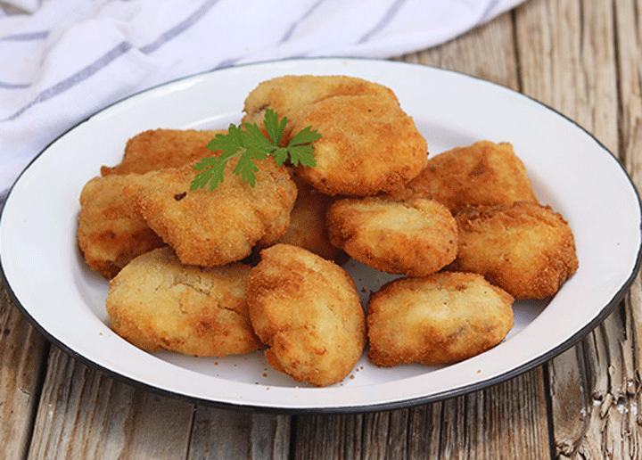

Home
Nuggets de Atún

Descripción
Una forma rápida y deliciosa de comer atún. Estos nuggets son crujientes por fuera y muy suaves por dentro, ideales como botana o para una comida ligera.
Ingredientes
- 1/2 papa
- 1 lata de atún
- Sal al gusto
- 100 gramos de pan molido
- Aceite (para freír)
Utensilios
Pasos
- Cocer la papa hasta que esté blandita.
- Colar el atún en la coladera y tratar de quitarle todo el agua o aceite.
- Pelar la papa y aplastarla muy bien. Colocar el atún, sal y poco a poco el pan molido según se vaya necesitando. Revolver todo muy bien y realizar unos deditos de papa (nuggets).
- Poner a calentar el aceite en el sartén y después colocar los nuggets. Darles vuelta para que estén doraditos.
- Sacarlos y servirlos con ensalada, y ¡listo!